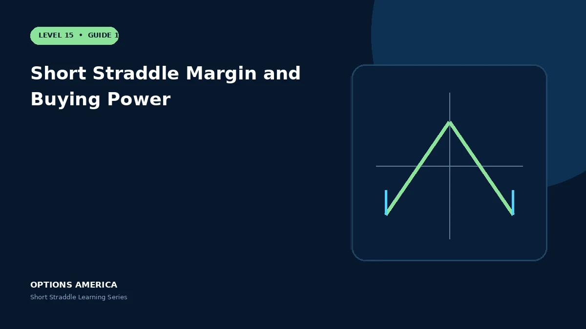

Understand why undefined-risk margin can expand and how to stress buying power before selling a short straddle.
Broker formulas
Margin depends on account type, underlying value, option prices and broker policy. Portfolio margin and standard margin can produce very different requirements.
Expansion risk
A rising stock increases short-call exposure; a falling stock increases short-put exposure. Higher IV can also raise option value and the broker's risk estimate simultaneously.
Liquidation risk
If available buying power falls too far, the broker may close positions at unfavorable prices. Defined theoretical breakevens do not protect against forced liquidation.
Reserve policy
Stress price gaps and volatility spikes across the entire portfolio. Keep a deliberate cash reserve and size from stressed loss and margin, not premium received.
A practical example
A trade opens with $4,000 margin but a market shock raises the requirement to $7,500 while the position loses value. Planning only for the opening figure creates forced-action risk.
This simplified scenario focuses on expiration outcomes; live prices and risks will differ. Live option prices also reflect the underlying price, time decay, rates, dividends, liquidity and transaction costs. Greeks are theoretical estimates, not guarantees.
Build a risk-first trading plan
Before using short straddle margin and buying power, record the underlying price, strike, expiration, total credit and contract multiplier. Calculate both expiration breakevens, then model losses beyond them rather than stopping at the profitable range. The maximum credit is visible at entry, but the largest future loss is not.
Stress at least five underlying prices, a volatility increase and decrease, and several dates. Include a gap that cannot be adjusted intraday. Review delta, gamma, theta and vega at the position and portfolio level because several neutral premium trades can become directional together.
Define a profit target, maximum tolerated loss, margin reserve, event rule and latest exit date. Use a single multi-leg order where possible and verify both legs after every fill or adjustment. This process does not eliminate risk, but it makes the decision measurable and repeatable.
After the trade, record actual movement, volatility change, slippage and the largest directional exposure. Comparing those results with the original forecast helps separate sound execution from a lucky outcome and improves future duration, strike and position-size decisions.
Frequently asked questions
Is opening margin maximum risk?
No.
Can margin change overnight?
Yes.
How should size be chosen?
Using stressed portfolio loss and buying power.
Continue the Short Straddle cluster
Explore related guides: How to Adjust a Short Straddle · How a Short Straddle Works · Short Straddle vs Iron Butterfly. For a structured sequence, use the free Level 15 – Short Straddle course.
Options involve risk and are not suitable for every investor. This material is educational and is not investment, tax or legal advice. Greeks are theoretical estimates, and contract terms and broker requirements can vary.